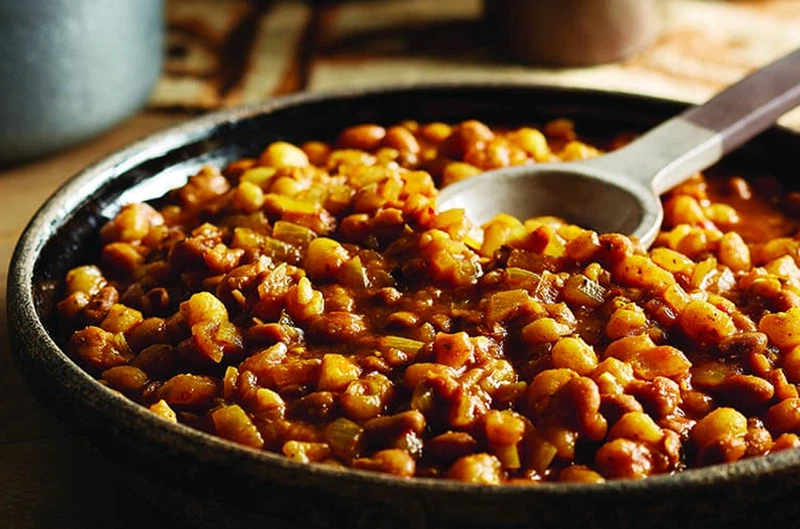

Samp and Beans

Samp and beans recipe
This is a popular South African dish mainly found in the provinces of KwaZulu Natal and Eastern Cape
Ingredients
- Water
- Beans
- Samp
- Soup
- Salt
- Cooking Oil
- Food Colorant
Steps
- Pour cold water into a pot
- Pour samp and Beans into the same pot
- Add a bit of cooking oil into the same pot
- Add a pinch of salt
- Place the pot on the stove and switch the stove on
- Cook for 2 hours
- Stir the the food at approx 30 minutes intervals
- Reduce the heat on the stove and put the notch on 3
- Serve the dish
Home